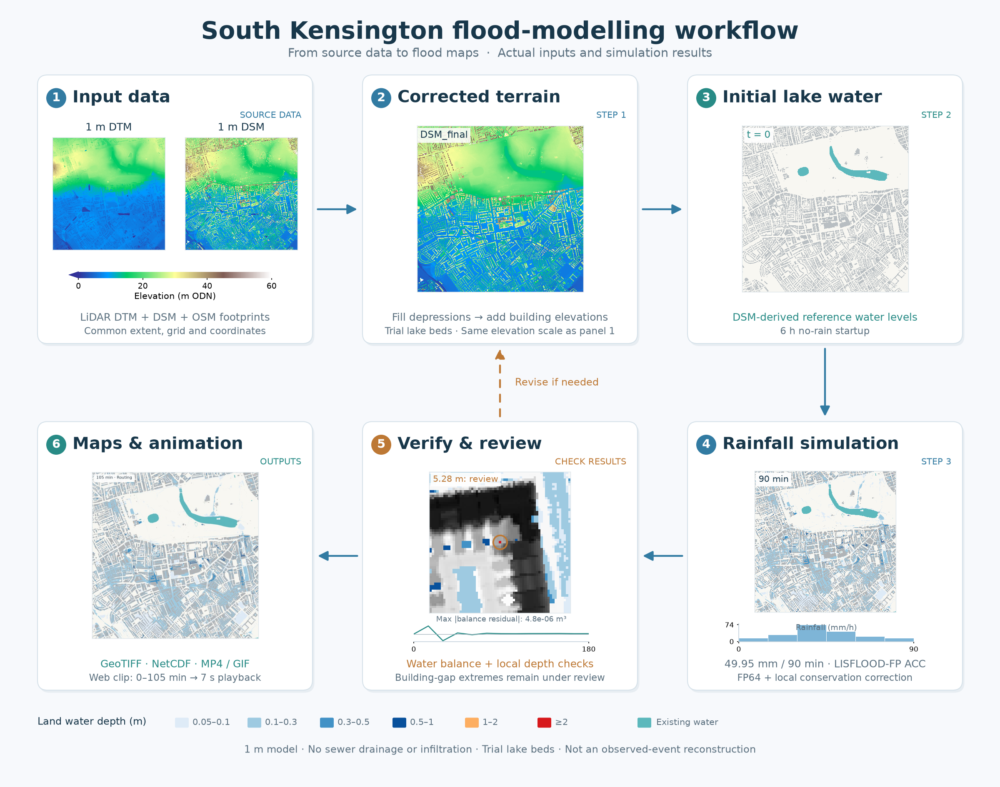
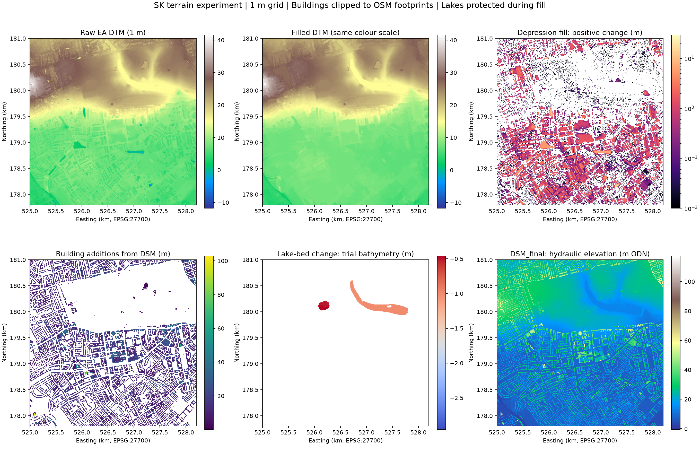
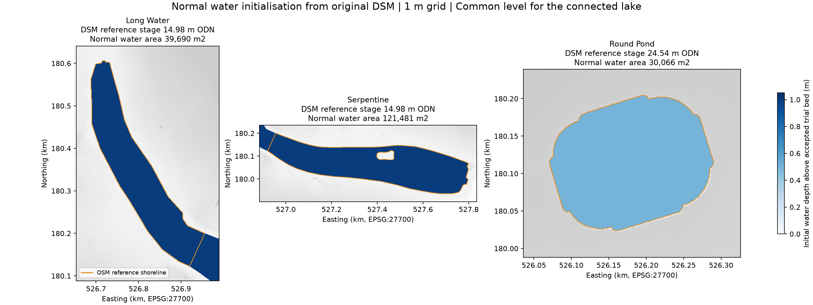
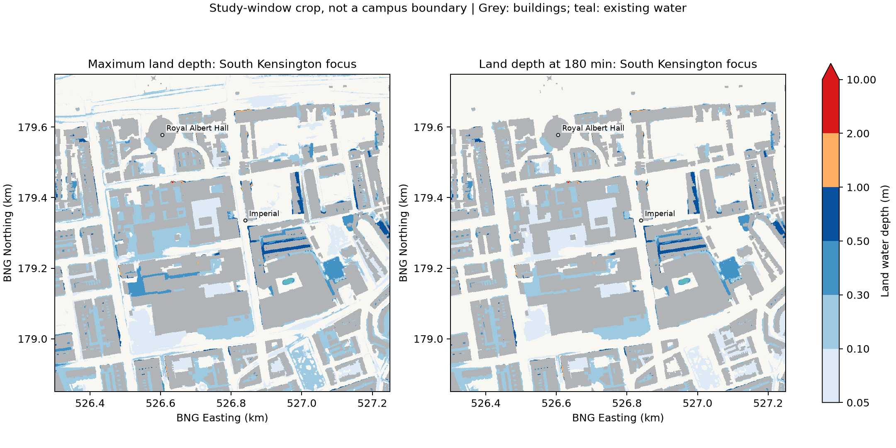
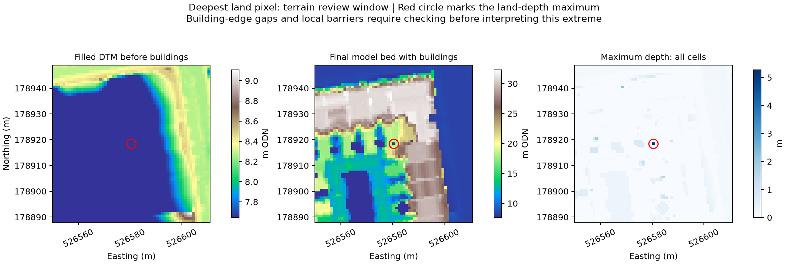
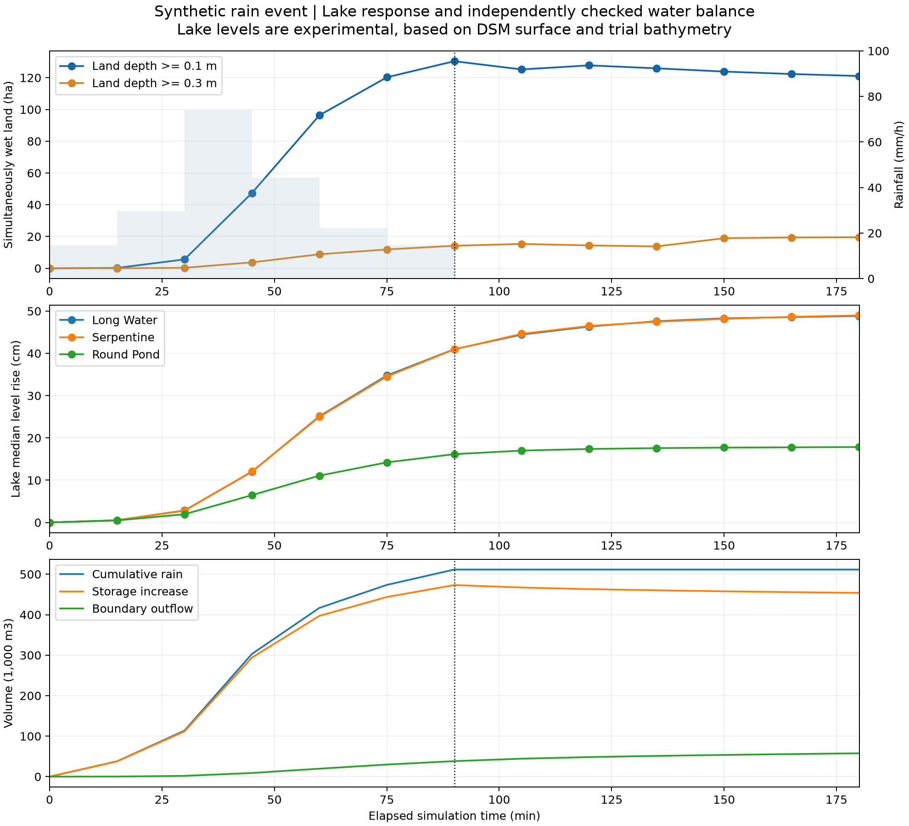

CANOPY / IMPERIAL CORRIDOR / RECORDED EXPERIMENT
A synthetic 49.95 mm storm over a 1 m terrain model, with buildings and a stabilized initial lake state. LISFLOOD-FP 8.3 GPU ACC uses a documented local conservation correction in double precision.
The simulated domain is 3.2 × 3.2 km and covers the campus surroundings and Hyde Park lakes. The rainfall is uniform and synthetic. This report is an independent experiment; the shared Viewer's current flood layer is unchanged.
The animation interpolates saved depth fields for display. It does not add solver time samples.
No infiltration, sewer drainage, roof redistribution or fixed-stage lake sources are enabled. Lake levels and bathymetry are trial estimates. Deep isolated cells at building edges require terrain review; the 5.277 m maximum is not an observed flood depth.






Depth near 90 minutes · Full-run maximum land depth · Land/roof/water mask · Data semantics and limitations
Depths are in metres above the modified bed. EPSG:27700; terrain and water-surface elevations use ODN. These GeoTIFFs are float32 presentation exports. The native inputs and independent volume checks retain double precision; no automatic Canopy 3D coordinate conversion is provided.